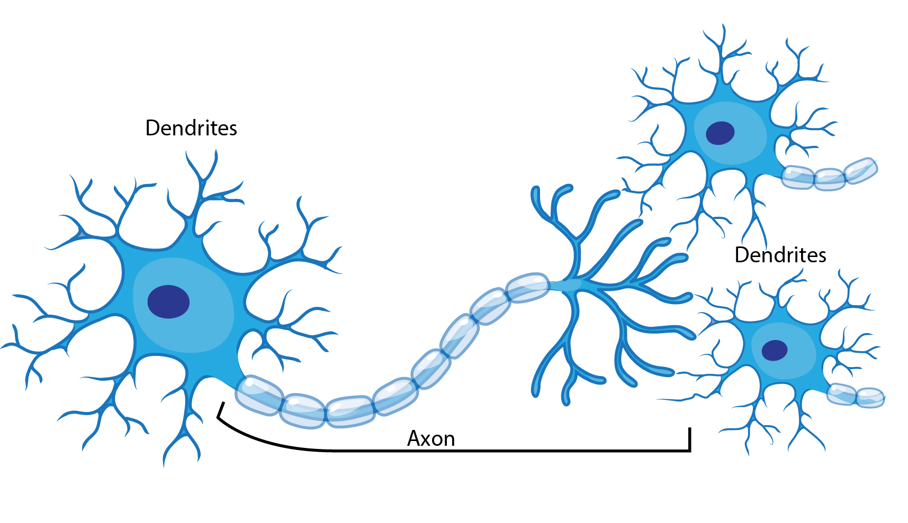
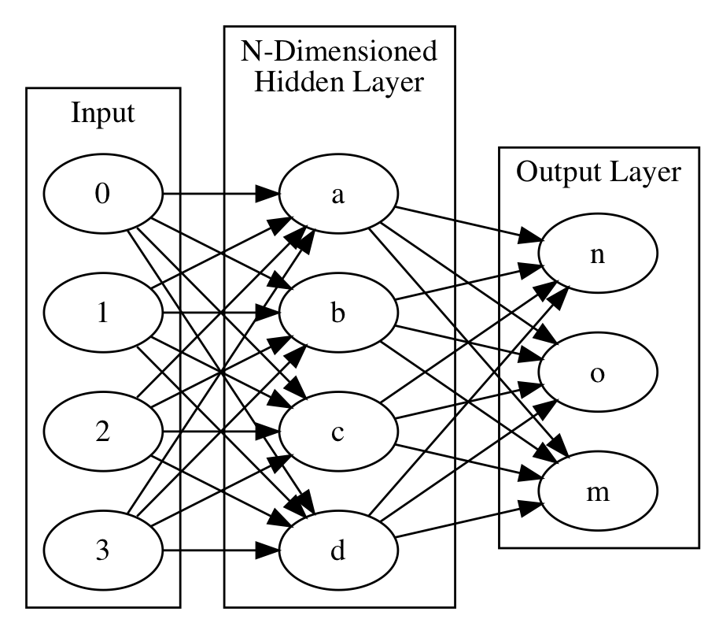
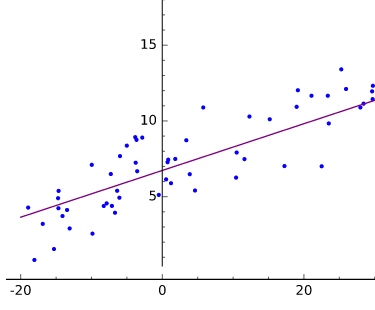
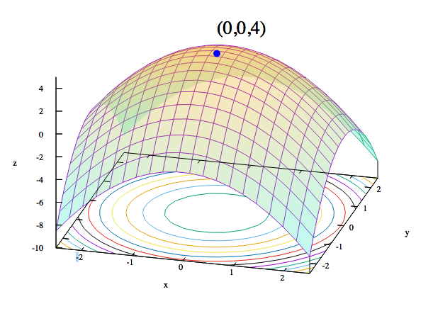
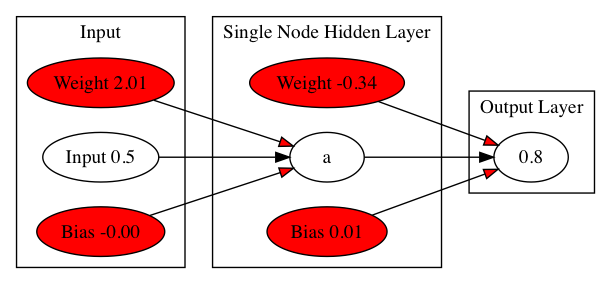
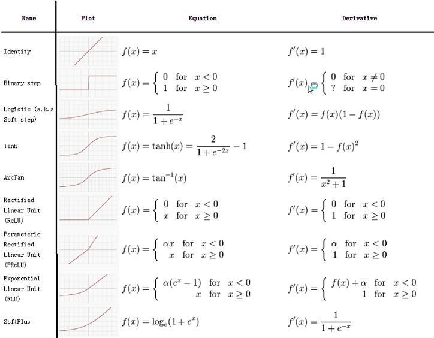
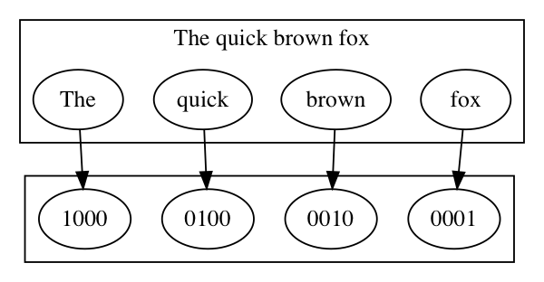
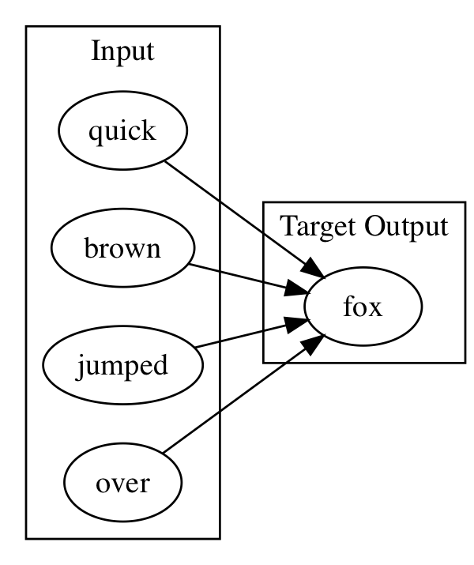
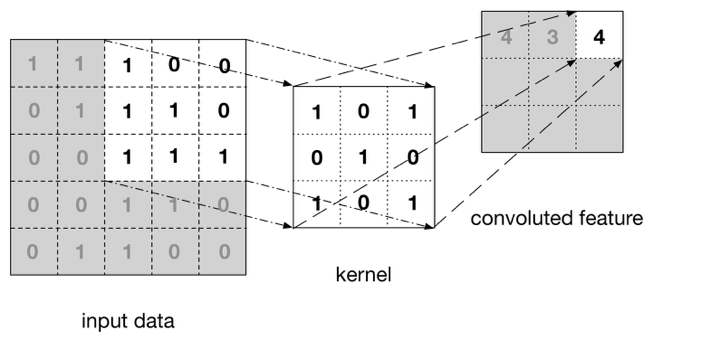
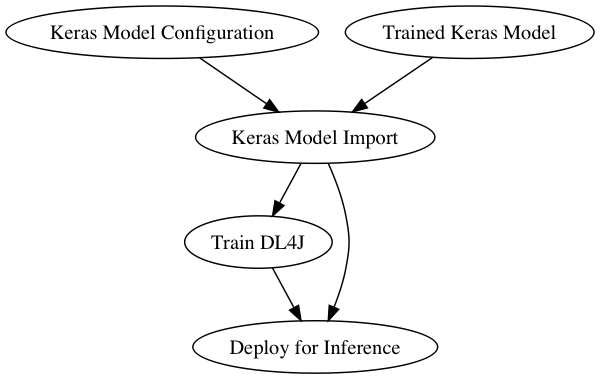

DeepLearning: Building Neural Networks with DeepLearning4J
DeepLearning: Building Neural Networks with DeepLearning4J
Welcome to the Course
Welcome to A Skymind Training Course
DeepLearning: Building Neural Networks with DeepLearning4J
2 Day Hands-ON Course
Class consists of 2 Days of Lecture and Hands-On Labs
DeepLearning: Building Neural Networks with DeepLearning4J
Day 1:
Introduction to Deep Learning Theory and Ecosystem
- Introduction to Deep Learning and Neural Networks
- Introduction to Tensorflow and Theano
- Introduction to Keras
- Demonstration of Neural Network
- NumPY/SciKit Learn basics
- Building a basic Neural Network
- Neural Network internals
- Activation Functions
- Backpropagation
- Loss Functions
- Weight Initialization
- Data Normalization/Standardization
DeepLearning: Building Neural Networks with DeepLearning4J
Day 2:
Model Tuning, Deployment, and Scaling
- Deep Network Topologies
- Feed Forward
- Convolutional
- Recurrent
- Tuning
- Overfitting
- Learning Rate
- Adaptive Learning Rates
- Dropout
- Regularization
- Advanced topics
DeepLearning: Building Neural Networks with DeepLearning4J
Day 2 Continued...
- Import Keras into Deeplearning4j for production
- Model Import
- Transfer Learning
- Model Serializer* Deploying onto the public cloud (AWS, Azure)
- Overview of the ecosystem
- Distributed Training on Spark
- Integration with Hadoop cluster
DeepLearning: Building Neural Networks with DeepLearning4J
Course Labs
- Remote Lab Environment is provided
DeepLearning: Building Neural Networks with DeepLearning4J
Schedule
- 9:00 AM Start
- 12:00 PM -> 1:00 PM Lunch
- Breaks 10 minutes each hour
- 4:00 PM finish
DeepLearning: Building Neural Networks with DeepLearning4J
Labs
- Java lab exercises using Intellij
- Separate Lab Document
- Simplest Network Lab
- DataVec Lab
- FeedForward Network Lab
- Convolutional Neural Network Lab
- RNN/LSTM Lab
- Model Saving Lab
DeepLearning: Building Neural Networks with DeepLearning4J
Introductions
- Intro to Skymind
- Instructor Intro
- Student Intro
DeepLearning: Building Neural Networks with DeepLearning4J
DeepLearning: Building Neural Networks with DeepLearning4J
Skymind
- Developer of DeepLearning4J
- Services
- Support
- Training
DeepLearning: Building Neural Networks with DeepLearning4J
Symind Details
DeepLearning for the Enterprise
- RedHat for AI
- Custom Deep Learning Solutions for Enterprise Users
- Java focussed
- Production focussed rather than Research Focussed
- Stack operates natively with Big Data Infrastructure
- Spark
- Hadoop
- Mesos
- CPU/GPU Execution
- Build, Customize and Maintain complete Deep Learning Stack
DeepLearning: Building Neural Networks with DeepLearning4J
How is DeepLearning4J Used
- Customer Segments
- Finance & Fraud (Financials, Banking)
- Government (NASA JPL)
- Telco
- Retail
- Notable Use Cases
- Anomaly Detection (Fraud Detection, Network Intrusion, Predictive Maintenance)
- Predictive Analytics (Demand Forecasting, Consumer Shopping Preferences)
- Computer Vision (Digital Stamp Recognition, OCR, Image Classification)
- Text Analytics (Chemical Compounds, FAA Part Document Versioning)
DeepLearning: Building Neural Networks with DeepLearning4J
Introductions
- Why are you here?
- What do you want to learn?
- What sections interest you?
- What is your background?
What is Deep Learning
What is Deep Learning
This section describes the fields of Artificial Intelligence, Machine Learning and Deep Learning and how they are related.
What is Deep Learning
What is Deep Learning?
The relationship between Deep Learning and Machine Learning
- Machine Learning
- Data Science / Data Mining
- Deep Learning
What is Deep Learning
Machine Learning
What is Deep Learning
What is Machine Learning?
- A method of solving problems that can not easilly be solved through hand written code. Instead build a program that "learns" or adjusts itself to attain the correct answer.
- A program that creates a program.
What is Deep Learning
What is Machine Learning?
-
Extracting Knowledge from raw data in the form of a model
- Decision trees
- Linear Models
- Neural Networks
-
Arthur Samuel quote:
- "Field of study that gives computers the ability to learn without being explicitly programmed"
What is Deep Learning
Why Machine Learning now?
- Computing resources are getting cheaper and more powerful
- More data is available
What is Deep Learning
A Diagram

What is Deep Learning
Data Science / Data Mining
- Machine Learning
- ⇒ Data Science / Data Mining
- Deep Learning
What is Deep Learning
Machine Learning Compared to Data Science/Mining
- Data Mining
- The process of extracting information from the data
- Uses Machine Learning
- Data Science
- Data Mining from the lens of a statistician
- Venn Diagrams
- A way to get a raise
- A more agreeable Actuary
- A statistician using a Mac
What is Deep Learning
Machine Learning Examples
- Clustering
- Typically unsupervised learning
- “K-Means Clustering”
- Example
- “cluster K groups of similar news articles together”
- ND4J supports this, but it is not a NN
What is Deep Learning
Machine Learning Examples continued...
- Random Decision Forest
- Recommender Engines
- Bayesian Classification
What is Deep Learning
A Definition of Deep Learning
- Deep learning (also known as deep structured learning, hierarchical learning or deep machine learning) is a branch of machine learning based on a set of algorithms that attempt to model high level abstractions in data.
source - wikipedia
What is Deep Learning
Neural Networks
- A computational approach patterned on the human brain and nervous system
What is Deep Learning
Comparison Between Neural Network and Machine Learning
- Machine Learning
- Hand Crafted Features
- SME(Subject Matter Expert) is needed
- Must inject Context
- Deep Learning/Neural Network
- Automatic Feature Engineering
- Learns Context
What is Deep Learning
Biological Neurons
- Biological Neuron: An electrically excitable cell that processes and transmits information through electrical and chemical signals
- Biological Neural Network: An interconnected group of neurons
What is Deep Learning
Biological Neuron

What is Deep Learning
Role of Artificial Neural Network
Learns or Trains to perform tasks that traditional programming methods find rather challenging.
- Speech recognition
- object recognition
- computer vision
- pattern recognition.
What is Deep Learning
Supervised vs Unsupervised Learning
- Supervised learning
- We give the training process labels (“outputs”) for every training input data row
- Model learns to associate input data with output value
- Unsupervised learning
- No labels
- Model attempts to learn structure in the data
- Neural Networks can be used for either supervised or unsupervised learning
What is Deep Learning
A Neural Network

What is Deep Learning
DeepLearning Considerations
- Inspired by the brain
- Very basic implementation
- Brain has huge number of Neurons
- Brain has non-linear connections
- Creates similar distributed units of functionality
- Knowledge comes through connections
What is Deep Learning
The Rise and Fall of Neural Networks
- 40 year old theory and practice
- Hype cycle followed by delusion
- Repeat cycle
- Incremental improvements over time
What is Deep Learning
Why Neural Networks Now?
- 2012 Neural Network dominates image recognition
- Leads to current boom
Framing the Question
Framing the Question
Framing the Question
Using Neural Networks
Framing the Question
- To build models we have to define
- What is our training data (“evidence”)?
- What kind of model (“hypothesis”) is appropriate for this data?
- What kind of answer (“inference”) would we like to get from the model?
- These questions frame all machine learning workflows
Framing the Question
What Neural Networks Do
- A = Input
- B = Expected Output
- Map or Transfomr A ==> B
- Using complex derivitable computation graph
- Apply random weights at each edge
- Adjust weights towards least error
- repeat
Framing the Question
A==> B Visually

Framing the Question
Linear Algebra Terms
- Scalars
- Elements in a vector
- In compsci synonymous with the term “variable”
- Vectors
- For a positive integer n, a vector is an n-tuple, ordered (multi)set, or array of n numbers, called elements or scalars
- Matricies
- Group of vectors that have the same dimension (number of columns)
Framing the Question
Linear Algebra Terms Continued..
- Scalar as point
- one dimension
- Vector as line
- two dimensions
- matrix as plane
- three dimensions
- Tensor
- More than 3 dimensions
- Tensor == NDarray
Framing the Question
Everything is a Tensor
- Rank of NDArray == Number of Dimension
- Rank 0 == scalar
- Rank 1 == vector
- Rank 2 == matrix
Framing the Question
Solving Systems of Equations
- Two general methods
- Direct method
- Iterative methods
- Direct method
- Fixed set of computation gives answer
- Data fits in memory
- Ex: Gaussian Elimination, Normal Equations
- Iterative methods
- Converges after a series of steps
- Stochastic Gradient Descent (SGD)
Framing the Question
Neural Networks Use an Iterative Method
The Neural Network Defines a System of Equations
- To Solve
- Values are tried
- Error is calculated
- Values of Weights are updated
- Repeat
Framing the Question
Training a Neural Net
- Inputs: Data you want to produce information from
- Connection weights and biases govern the activity of the network
- Learning algorithm changes weights and biases with each learning pass
Framing the Question
Fitting the Training Data

Framing the Question
Overfitting the Training Data

Framing the Question
Optimization
- Iteratively adjust the values of the x parameter vector
- Until we minimize the error in the model
- Error = prediction – actual
- Loss functions measure error
- simple/common loss function:
- “mean squared error”
- How do we make choices about the next iterative “step”?
- Where “step” is how we change the x parameter vector
Framing the Question
Loss Function
- Assigns cost to output vs expected output
- Optimization seeks to minimize the value of the loss function
Framing the Question
Convex Optimization

Framing the Question
Gradient Descent
- Optimization method where we consider parameter space as
- “hills of error”
- Bottom of the loss curve is the most “accurate” spot for our parameter vector
- We start at one point on the curved error surface
- Then compute a next step based on local information
- Typically we want to search in a downhill direction
- So we compute the gradient
- The derivative of the point in error-space
- Gives us the slope of the curve
- So we compute the gradient
Framing the Question
Stochastic Gradient Descent
- With basic Gradient Descent we look at every training instance before computing a “next step”
- With SGD with compute a next step after every training instance
- Sometimes we’ll do a mini-batch of instances
Framing the Question
SGD Visually Explained

Framing the Question
Summary
- A Neural Network Transforms input to output through a process of
- Computation Graph of complex non-linear functions
- Random weight initialization
- Update of weights after calculating loss function to improve results
- Iterate to further improve results
Simple Neural Network Introduction
Simple Neural Network Introduction
This Section introduces Neural Networks starting with a very basic example
Simple Neural Network Introduction
Simple Neural Network
- Simple Network Details
- Simple Network Lab
- Important Network Settings
- VGG-16 Demo
Simple Neural Network Introduction
Simple Network
The Goal: Input=0.5 Output=0.8

Simple Neural Network Introduction
The Design:
- Apply Random weights, plus activation function per neuron => output

- Test output: does -0.23 = 0.8 ?
Simple Neural Network Introduction
Calculate error
- backpropagate to adjust weights
- repeat

Simple Neural Network Introduction
Output Layer
Can be Configured for Different Purposes:
- Classification
- One of Many
- Cat, Dog, Soccer Ball, House
- Binary
- one of two
- True/False
- SPAM/Not SPAM
- Continuous
- Numeric value in range
- House Price
- Multi Class
- 1 or more of Many
Simple Neural Network Introduction
Simple Network Settings
Simple Network has Settings that will become familiar as they are used in all Neural Networks
- LearningRate
- Updater
- Output Activation
- Hidden Layer Activation
- Number of Epochs
- Loss Function
Simple Neural Network Introduction
Extrapolate from Simple Network
- Simple Network took one value in and one value out and trained the network to learn the correct value
- More complex data same process
- Input can be images, row data, documents
- Output can be T/F, range of values, labels of a class
Simple Neural Network Introduction
Simple Network Lab
- See your Lab Manual
Simple Neural Network Introduction
VGG-16 Demo
- Instructor demonstration of a more complex Neural Network
Simple Neural Network Introduction
Questions
Why do we do deep learning?
Which requires Expert Feature Engineering?
A. Deep Learning
B.Machine Learning
Introduction to Keras
Introduction to Keras
Introduction to Keras
What is Keras
- Deep Learning Toolkit for building Neural Networks
- Uses Theano or Tensorflow for graph processing
- Uses Numpy Scikit learn for data wrangling
Introduction to Keras
Keras Diagram

Introduction to Tensorflow and Theano
Introduction to Tensorflow and Theano
Introduction to Tensorflow and Theano
Tensorflow and Theano are Similar
- Both provide a Python API to operations over NDArrays(Tensors)
- Both allow building a graph of operations and executing that graph in C++
- Both are pretty low level, not C++ but flexible and complex enough to do interesting things.
Introduction to Tensorflow and Theano
Tensorflow
- Developed by Google Brain Research team
- Written in Python C++
- Python API
- C++ core
Introduction to Tensorflow and Theano
Tensorflow Core
- dataflow graph representing computations
- The entire dataflow graph is a complete description of computations, which occur within a session, and are executed on devices (CPUs or GPUs)
- Nodes represent operations
- edges represent tensors (multi-dimensional arrays, the backbone of TensorFlow)
Introduction to Tensorflow and Theano
Linear Regression example
import numpy as np import tensorflow as tf # Model parameters W = tf.Variable([.3], tf.float32) b = tf.Variable([-.3], tf.float32) # Model input and output x = tf.placeholder(tf.float32) linear_model = W * x + b y = tf.placeholder(tf.float32) # loss loss = tf.reduce_sum(tf.square(linear_model - y)) # sum of the squares # optimizer optimizer = tf.train.GradientDescentOptimizer(0.01) train = optimizer.minimize(loss)
Introduction to Tensorflow and Theano
Linear Regression example...
# training data
x_train = [1,2,3,4]
y_train = [0,-1,-2,-3]
# training loop
init = tf.global_variables_initializer()
sess = tf.Session()
sess.run(init) # reset values to wrong
for i in range(1000):
sess.run(train, {x:x_train, y:y_train})
# evaluate training accuracy
curr_W, curr_b, curr_loss = sess.run([W, b, loss], {x:x_train, y:y_train})
print("W: %s b: %s loss: %s"%(curr_W, curr_b, curr_loss))
Introduction to Tensorflow and Theano
Theano
Numerical Computation Library for Python
Define, optimize and evaluate mathematical expressions over NDArrays
DeepLearning4J
DeepLearning4J
- DL4J overview
- DataVec
- ND4J and LibND4J
- DeepLearning4j
DeepLearning4J Overview
DeepLearning4J Overview
Introduction to the DL4J subprojects
DeepLearning4J Overview
Goals of the DeepLearning4J project
- Provide a Toolkit for using DeepLearning on the JVM
- Enterprise users
- Security
- Flexibility
DeepLearning4J Overview
DeepLearning4J sub-projects
- DataVec
- Tools for ETL
- ND4J
- NUmeric Arrays
- NumPY for the JVM
- libnd4j
- Native Libraries for GPUs/CPUs
- DeepLearning4J
- Tools to train Neural Networks
DeepLearning4J Overview
Why Java?

DataVec
DataVec
Introduction to DataVec
DataVec
DataVec Provides
Tools to get Data into Neural Networl
- Neural networks process numeric arrays
- Datavec helps you get from your_data => numeric array
DataVec
Data Sources
- Log files
- Text documents
- Tabular data
- Images and video
- and more !!
DataVec
Goal
- Build a user freindly comprehensive toolkit for data pilelines into Neural Netowrks
DataVec
DataVec Features
- Transformation
- Scaling
- Shuffling
- Joining
- Splitting Test and Train
DataVec
Commonly Used Features
- RecordReaders
- Read files or input, convert to List of Writables
- Normalizers
- Standardize, scale or normalize the data
- Transform Process
- Join datasets, replace strings with numerics, extract labels
DataVec
Diagram of available ETL paths

DataVec
DataVec Image Basics
- Images are arrays of pixel values

DataVec
Code Example: Load above image as INDArray
Input
INDArray imagematrix = loader.asMatrix(image);
System.out.println(imagematrix);
Output
[[[[255.00, 255.00, 255.00, 255.00],
[255.00, 0.00, 0.00, 255.00],
[255.00, 0.00, 0.00, 255.00],
[255.00, 255.00, 255.00, 255.00]]]]
DataVec
Code Example: Scale values between 0 and 1
Input
DataNormalization scaler = new ImagePreProcessingScaler(0,1);
scaler.transform(imagematrix);
Output
[[[[1.00, 1.00, 1.00, 1.00],
[1.00, 0.00, 0.00, 1.00],
[1.00, 0.00, 0.00, 1.00],
[1.00, 1.00, 1.00, 1.00]]]]
DataVec
Manipulating Images with DataVec
Scaling is Automatic
- Scale images to same dimensions with RecordReader
- Used in pipeline for example in training
ImageRecordReader recordReader = new ImageRecordReader(height,width,channels);
- Scale image to appropriate dimenstions with NativeImageLoader
- Used one-off for example in inference
NativeImageLoader loader = new NativeImageLoader(height, width, channels); \ load and scale
INDArray image = loader.asMatrix(file); \ create INDarray
INDArray output = model.output(image); \ get model prediction for image
DataVec
Code Example: Scaling
Scale pixel values
DataNormalization scaler = new ImagePreProcessingScaler(0,1);
scaler.fit(dataIter);
dataIter.setPreProcessor(scaler);
DataVec
Image Data Set Augmentation
- Create "larger" training set with OpenCV/dataVec tools
- Transform
- Crop
- Skew
DataVec
Applying Labels
- ParentPathLabelGenerator
- PathLabelGenerator
DataVec
Available Record Readers
- Table of available record readers:
DataVec
Available ND4J Pre-Processors
- ImagePreProcessingScaler
- min max scaling default 0 + - 1
- NormalizerMinMaxScaler
- Scale values observed min -> 0, observed max -> 1
- NormalizerStandardize
- moving column wise variance and mean
- no need to pre-process
DataVec
Image Transforms with JavaCV, OpenCV, ffmpeg
- Libraries included
DataVec
Image pipeline Single Image to Pre-Trained Model

DataVec
Code Example: CSV Data to INDArray
public class CSVExample {
private static Logger log = LoggerFactory.getLogger(CSVExample.class);
public static void main(String[] args) throws Exception {
//First: get the dataset using the record reader.
//CSVRecordReader handles loading/parsing
int numLinesToSkip = 0;
String delimiter = ",";
RecordReader recordReader =
new CSVRecordReader(numLinesToSkip,delimiter);
recordReader.initialize(new FileSplit
(new ClassPathResource("iris.txt").getFile()));
DataVec
Code Example: Continued....
//Second: the RecordReaderDataSetIterator
//handles conversion to
//DataSet objects, ready for use in neural network
int labelIndex = 4;
//5 values in each row of the iris.txt CSV:
//4 input features followed by an integer label (class) index.
//Labels are the 5th value (index 4) in each row
int numClasses = 3;
//3 classes (types of iris flowers) in the iris data set.
//Classes have integer values 0, 1 or 2
int batchSize = 150;
//Iris data set: 150 examples total.
//Loading all of them into one DataSet
//(not recommended for large data sets)
DataSetIterator iterator =
new RecordReaderDataSetIterator
(recordReader,batchSize,labelIndex,numClasses);
DataSet allData = iterator.next();
DataVec
DataVec Code Explained
- RecordReader recordReader = new CSVRecordReader(numLinesToSkip,delimiter);
- A RecordReader prepares a list of Writables
- A Writable is an efficient Serialization format
- DataSetIterator iterator = new RecordReaderDataSetIterator
- We are in DL4J know, with DataSetIterator
- Builds an Iterator over the list of records
- DataSet allData = iterator.next();
- Builds a DataSet
- INDArray of Features, INDArray of Labels
DataVec
Frequently Used DataVec classes
- CSVRecordReader
- CSV text data
- ImageRecordReader
- Convert image to numeric array representing pixel values
- JacksonRecordReader
- Parses JSON records
- ParentPathLabelGenerator
- Builds labels based on directory path
- Transform, Transform Process Builder, TransformProcess
- Conversion tools
DataVec Lab
DataVec Lab
See the Lab Manual for the DataVec Lab
ND4J
ND4J
- Provides scientific computing libraries
- Main features
- Versatile n-dimensional array object
- Multiplatform functionality including GPUs
- Linear algebra and signal processing functions
ND4J
ND4J and DeepLearning
- Classes frequently Used
- DataSet
- Container for INDArrays of Features/Labels
- DataSetIterator
- Build DataSet from RecordReader
- DataSet
ND4J
libND4J
- The C++ engine that powers ND4J
- Speed
- CPU and GPU support
Neural Network Internals
Neural Network Internals
This section describes key configuration details of Neural Networks
Neural Network Internals
Features Commong to All Neural Networks
- Activation Functions
- BackPropagation
- Loss Functions
- Weight Initialization
- Data Normalization and Standardization
Activation Functions
Activation Functions
Activation Functions
Activation Functions
Activation Functions
- Determines output of Neuron Based on Inputs
- Non-Linear Transform function at each node
- Defined per layer
- Allow neural networks to make complex boundary decisions for features at various levels of abstraction.
Activation Functions
Common Activation Functions
DeepLearning4J and Keras support the following Activation functions
- CUBE
- ELU
- HARDSIGMOID
- HARDTANH
- IDENTITY
- LEAKYRELU
Activation Functions
Supported Activation Functions...
- RATIONALTANH
- RELU
- RRELU
- SIGMOID
- SOFTMAX
- SOFTPLUS
- SOFTSIGN
- TANH
Activation Functions
Commonly Used Activation Functions
- Sigmoid
- TanH
- Relu
Activation Functions
Activation Functions

Activation Functions
Activation Function and output
Activation Function on output is special
- For Classification
- Softmax
- For regression
- Identity
Activation Functions
Output Layer Activation Guidelines
- Classification
- softmax activation
- Negative Log Likelihood for loss Function
- MXCENT
- Multi Class Cross Entropy
- Softmax
- Probability Distribution over classes
- Outputs sum to 1.0
- Regression
- Identity Activation
- MSE(Mean Squared Error) Loss Function
Back Propagation and Updaters/optimizers
Back Propagation and Updaters/optimizers
Back Propagation and Updaters/optimizers
What is BackPropagation
- The process of updating the weights of a Neural Network to reduce error
- The Forward Pass generates an output
- The Loss Function calculates the error
- Gradient Descent is used to minimize the error
- Steps are repeated and network continues to improve
Back Propagation and Updaters/optimizers
Updaters/Optimizers
- List of Keras Supported Optimizers
Back Propagation and Updaters/optimizers
Adapting to Changing Error
- Initially error will be large
- Output more or less random
- Two approaches
- Dynamic Learning Rate
- Use Adaptive Optimizer
Back Propagation and Updaters/optimizers
Adaptive Optimizers / Dynamic Learning
- Initially you want the network to train quickly
- Error is large
- Take Large Steps
- As Error decreases
- Smaller steps are better
Back Propagation and Updaters/optimizers
Updater Animation
- Thanks to Alec Radford

Back Propagation and Updaters/optimizers
Updater Animation
- Thanks to Alec Radford

Loss Functions
Loss Functions
Loss functions quantify how close a given neural network is to the ideal it is training towards.
Loss Functions
AVAILABLE LOSS FUNCTIONS
- For Regression
- MSE(Mean Squared Error)
- Mean Absolute Error(MAE)
- Mean Squared Log Error (MSLE)
- Mean Absolute Percentage Error(MAPE)
Loss Functions
Regression Loss Function Common Usage
- MSLE and MAPE handle large ranges,
- common practice to normalize input to suitable range and use MSE or MAE
Loss Functions
Loss Functions for Classification
- Hinge Loss
- Hard Classification 0,1 a -1,1 classifier
- Logistic Loss
- Probabilities per class
- Probabilities per class
Loss Functions
Negative Log Likelihood
- Likelihood
- between 0 and 1
- Log likelihood
- between negative infinity and 0
- Negative log Likelihood
- between 0 and infinity
Weight Initialization
Weight Initialization
Weight Initialization
Weight Initialization: The Challenge
- Weights too small
- Signal shrinks as it passes through layers
- Becomes too small to be useful
- Weights too large
- Signal Grows as it passes through Layers
- Becomes to large to be useful
Weight Initialization
Xavier Distribution
- 0 mean and a specific variance
- Var(W)=1/nIn
Weight Initialization
Benefits of Xavier
- Xavier Enabled Full Network Training vs per-Layer Pre-Training
- Big Breakthrough
Weight Initialization
Alternatives to Xavier
- Relu
- Works well with CNN's and Relu activations
Types of Neural Networks
Types of Neural Networks
This section introduces the various types of Neural Networks
Types of Neural Networks
Contents
- FeedForward Neural Networks
- Recurrent Neural Networks
- Convolutional Neural Networks
- Other
Types of Neural Networks
FeedForward Neural Network
Also called Multi-Layer Perceptron
- Fully Connected, or Dense Layers
- Forward Connections only
Types of Neural Networks
FeedForward Neural Network Uses
- Supervised Learning
- Classification
- Regression
Types of Neural Networks
FeedForward Neural Network Data
- Tabular data
- Image data
Types of Neural Networks
FeedForward Neural Network Output
- Flexible
- Range of values, one of a class probabilities
- Limitation
- one input maps to one output
Types of Neural Networks
Recurrent Neural Networks
RNN / LSTM
- In this class when we talk about RNNs we are typically talking about LSTMs
Types of Neural Networks
Recurrent Neural Networks Uses
- Sequence or Time Series Data
Types of Neural Networks
Recurrent Neural Networks Flexibility
Flexible Mapping of Input to Output
- One to Many
- Image to words for caption
- Many to Many
- French word sequence to English word sequence
- Many to one
- Speaker identification given voice sample
Types of Neural Networks
Convolutional Neural Network
- Inspired by the visual cortex
- Useful for image recognition
Types of Neural Networks
How Convolutional Neural Networks differ from other Networks
- Image data analyzed as 4D NDArrays (tensors)
- For a 10*10 image, a series of 3*3, or 5*5 subsets are analyzed
Types of Neural Networks
Other Useful Neural Network Types
Not covered in this course
- Variational Autoencoders
- Restricted Boltzman Machines
- more....
Types of Neural Networks
Variational Autoencoders
- Unsupervised learning of features
- Input -> Neural Net -> rebuild input
- Reduction in dataset dimensionality
Types of Neural Networks
Restricted Boltzmann Machines
- Feature extraction and dimensionality reduction
- Model probability
- Useful for the pre-training phase in other large Deep Networks
FeedForward Neural Networks Explained
FeedForward Neural Networks Explained
FeedForward Neural Networks Explained
FeedForward Neural Networks
- Share many features with Convolutional and Recurrent Neural Networks
- FeedForward neural networks ~ MultiLayerPerceptrons
- Developed in the 1940s-1960s
FeedForward Neural Networks Explained
What is a Feed Forward Neural Network
- Simplest of Artificial Neural Networks
- Input Layer
- One or More Hidden Layers
- Output Layer
FeedForward Neural Networks Explained
A FeedForward Neural Network
FeedForward Neural Networks Explained
A Neural Network with Two Hidden Layers

FeedForward Neural Networks Explained
Connections Between Nodes
- Designed to be selective and trainable
- Filter, aggregate, convert, amplify, ignore what they pass on to next neuron
- This transformation converts raw input into useful information
- Input has trainable weight applied
- Output determined by activation function
FeedForward Neural Networks Explained
Neural Network Diagram
- Node J

FeedForward Neural Networks Explained
Single Node Diagram Discussion
-
Input
- Input is determined by the output of the input neurons * the weights applied to that output
-
Weights
- Assigned randomly* initially between 0-1
- Weight of 0, input is ignored
- Large weight input is amplified
- As the network trains weights are adjusted
-
Output
- Output is determined but it's input * weights, and the activation function.
- Sigmoid activation low input output 0 higher input output 1, in between S curve.
- ReLU low input 0 then linear after trigger.
FeedForward Neural Networks Explained
Key Terms Review
- Activation Function
- A nonlinear A function that maps input on a nonlinear scale such as sigmoid or tanh. By definition, a nonlinear function’s output is not directly proportional to its input
- Loss Function
- How error is calculated
- Weights
- BackProp
FeedForward Neural Networks Explained
Training a Neural Net
- Inputs: Data you want to produce information from
- Connection weights and biases govern the activity of the network
- Learning algorithm changes weights and biases with each learning pass
FeedForward Neural Networks Explained
Evaluation and The Confusion Matrix
- Table representing
- Predictions vs Actual Data
- We count these answers to get
- True Positives
- False Positives
- True Negatives
- False Negatives
- Allows us to evaluate the model beyond “average accurate” percent
- Can look at well a model can perform when it needs to be more than just “accurate a lot”
FeedForward Neural Networks Explained
Confusion Matrix

FeedForward Neural Networks Explained
Confusion Matrix in DL4J
- Evaluation Class
- org.deeplearning4j.eval.Evaluation
- confusionToString() method
LAB: FeedForward Network
LAB: FeedForward Network
In this Lab you will build a Neural Network to Determine Age of Shellfish based on Measurements
Please refer to your lab manual.
Data Ingestion Case Study: Text
Data Ingestion Case Study: Text
Data Ingestion Case Study: Text
Table of Contents
- PreProcessing and tokenization
- Bag of Words
- N-Grams
- Word2Vec
- Paragraph Vectors
- GloVE
- Words as Sequence of Characters
Data Ingestion Case Study: Text
Table of Contents
- ⇒ PreProcessing and tokenization
- Bag of Words
- N-Grams
- Word2Vec
- Paragraph Vectors
- GloVE
- Words as Sequence of Characters
Data Ingestion Case Study: Text
PreProcessing and Tokenization
- Tokenizer
- Splits stream of words into individual words
- DefaultTokenizer
- NGramTokenizer
- PosUimaTokenizer
- UimaTokenizer
- Splits stream of words into individual words
- PreProcessors
- LowCasePreProcessor
- StemmingPreprocessor
Data Ingestion Case Study: Text
Table of Contents
- PreProcessing and tokenization
- ⇒ Bag of Words
- N-Grams
- Word2Vec
- Paragraph Vectors
- GloVE
- Words as Sequence of Characters
Data Ingestion Case Study: Text
Bag of Words
Corpus is represented as the bag(multiset) of its words.
- No Grammar
- No order
- Frequency only
"Bob and Carol and Ted and Alice"
Becomes the List ["Bob","and","Carol","Ted","Alice"]
Term frequency [1,3,1,1,1]
Data Ingestion Case Study: Text
Bag of Words Uses
- TfIDF
- Frequency of word/document compared to word/corpus of documents
Data Ingestion Case Study: Text
Bag of Words Example
- Lab folder has example
-
Tokenizer to read files from directory and label with filename
TokenizerFactory tokenizerFactory = new DefaultTokenizerFactory(); LabelAwareIterator iterator = new FilenamesLabelAwareIterator .Builder() .addSourceFolder(new ClassPathResource("bow").getFile()) .useAbsolutePathAsLabel(false) .build();
Data Ingestion Case Study: Text
Bag of Words Example .....
-
Code to show contents of iterator
while(iterator.hasNext()){ LabelledDocument doc = iterator.nextDocument(); System.out.println(doc.getContent()); System.out.println(doc.getLabels().get(0)); } iterator.reset();
Data Ingestion Case Study: Text
Bag of Words Example .....
BagOfWordsVectorizer vectorizer = new BagOfWordsVectorizer.Builder()
.setMinWordFrequency(1)
.setStopWords(new ArrayList<String>())
.setTokenizerFactory(tokenizerFactory)
.setIterator(iterator)
.build();
vectorizer.fit();
Data Ingestion Case Study: Text
Bag of Words Example .....
-
Code to explore the contents of the Bag of Words
log.info(vectorizer.getVocabCache().tokens().toString()); System.out.println(vectorizer.getVocabCache().totalNumberOfDocs()); System.out.println(vectorizer.getVocabCache().docAppearedIn("two.")); System.out.println(vectorizer.getVocabCache().docAppearedIn("one.")); System.out.println(vectorizer.getVocabCache().docAppearedIn("world"));
Data Ingestion Case Study: Text
Table of Contents
- PreProcessing and tokenization
- Bag of Words
- ⇒ N-Grams
- Word2Vec
- Paragraph Vectors
- GloVE
- Words as Sequence of Characters
Data Ingestion Case Study: Text
NGrams
- Contiguous sequence of n items from a sequence of text
- Example text "It is the year 2016"
- Extracted Bi-grams
- "It is"
- "is the"
- "the year"
- "year 2016"
- Extracted Tri-grams
- "It is the"
- "is the year"
- "the year 2016"
Data Ingestion Case Study: Text
NGram uses
- Provide more context than Bag of Words
- Used in some neural networks for speech recognition to narrow the scope of prediction
- RNN predicts next word out of top x percent of trigram for previous 2 word predictions
Data Ingestion Case Study: Text
Code Example: NGrams in DL4J
public static void main(String[] args) throws Exception{
String toTokenize = "To boldly go where no one has gone before.";
TokenizerFactory factory =
new NGramTokenizerFactory(new DefaultTokenizerFactory(), 1, 2);
Tokenizer tokenizer = factory.create(toTokenize);
factory = new NGramTokenizerFactory
(new DefaultTokenizerFactory(), 2, 3);
List<String> tokens = factory.create(toTokenize).getTokens();
log.info(tokens.toString());
Output
[To, boldly], [boldly, go], [go, where],......
[To, boldly, go], [boldly, go, where] ......
Data Ingestion Case Study: Text
Table of Contents
- PreProcessing and tokenization
- Bag of Words
- N-Grams
- ⇒ Word2Vec
- Paragraph Vectors
- GloVE
- Words as Sequence of Characters
Data Ingestion Case Study: Text
Word2Vec
- Model for word embeddings
- Vector Space
- Each word in corpus => vector in multi-dimensional vector space
- Relative location of word in vector space denotes relationship
- Distance and direction from Boy->Man
- Distance and Direction from Girl->Woman
Data Ingestion Case Study: Text
Word2Vec
- Model for word embeddings
- Vector Space
- Each word in Corpus => Vector in Vector Space
Data Ingestion Case Study: Text
Word2Vec - Generating the Vector Space
- Neural Network trained to return word probabilities of a moving window
- Given word "Paris", out of the corpus of words predict probility of each word occuring within say five words of the word "Paris"
- One hot Vector, size of every word in the corpus
- all 0's except for 1 representing the word
- See Demo https://ronxin.github.io/wevi/
- See example in intellij
- Allows you to do word math
- King - Man + Woman = (?) Queen
Data Ingestion Case Study: Text
One-hot encoding
- Vector, the size of the vocabulary, all 0 except for single 1

Data Ingestion Case Study: Text
Two Methods for Building word2vec
- CBOW
- w1,w2,w4,w5 as input to neural network
- Context words
- Train net with w3 as target
- Focus word
- w1,w2,w4,w5 as input to neural network
- SKIP GRAM
- Reverse of CBOW
- Input is focus word
- Output is context words
Data Ingestion Case Study: Text
CBOW visually

Data Ingestion Case Study: Text
CBOW visually

Data Ingestion Case Study: Text
CBOW visually

Data Ingestion Case Study: Text
CBOW visually

Data Ingestion Case Study: Text
Table of Contents
- PreProcessing and tokenization
- Bag of Words
- N-Grams
- Word2Vec
- ⇒ Paragraph Vectors
- GloVE
- Words as Sequence of Characters
Data Ingestion Case Study: Text
Paragraph Vectors/doc2Vec
- Extension to Word2Vec
- Word2Vec associates words with words
- doc2vec has additional label
- Useful for sentiment analysis
Data Ingestion Case Study: Text
Table of Contents
- PreProcessing and tokenization
- Bag of Words
- N-Grams
- Word2Vec
- Paragraph Vectors
- ⇒ GloVE
- Words as Sequence of Characters
Data Ingestion Case Study: Text
GloVE
- Vector Representation of words obtained from unsupervised word-word co-occurance
- Pretrained vectors available
- Wikipedia
Data Ingestion Case Study: Text
- PreProcessing and tokenization
- Bag of Words
- N-Grams
- Word2Vec
- Paragraph Vectors
- GloVE
- ⇒ Words as Sequence of Characters
Data Ingestion Case Study: Text
Text as Sequence of Characters
Text can be treated as sequence of characters; neural networks can be trained to answer the question "Given input character X predict the next character"; then repeat.
Data Ingestion Case Study: Text
Character vs Word as Unit of Analysis
- How many words are there?
- How many characters are there?
- Text->word processing is hard
- prefix, suffix, etc
- "old school" , "New York"
Data Ingestion Case Study: Text
Using Recurrent Neural Networks to Write Weather Forecast
After the content that describes LSTM RNN in detail we will have a lab that builds a neural network to generate characters one character at a time from a learned corpus.
In the lab we will train the network weather forecasts.
**Instructor note, foreshadow the lab , do not start the lab yet, next chapter **
Introduction to Recurrent Neural Networks
Introduction to Recurrent Neural Networks
- Overview
- Benefits
- Modeling Sequences
- Details
- BackPropagation through time
- Tuning Guidelines
- PhysioNet Example
Introduction to Recurrent Neural Networks
Table of Contents
- ⇒ Overview
- Benefits
- Modeling Sequences
- Details
- BackPropagation through time
- Tuning Guidelines
- PhysioNet Example
Introduction to Recurrent Neural Networks
What is a Recurrent Neural Network?
- FeedForward Network with hidden state
- Hidden state with own internal dynamics
- Information can be stored in "hidden state" for a long time
In this section when we refer to RNN we mean Graves LSTM as defined here https://arxiv.org/abs/1308.0850
Introduction to Recurrent Neural Networks
Long Short Term Memory RNNs Uses
- HandWriting Recognition
- Sequence/Time Series Data
- Sequence Generation
- Sequence Classification
Introduction to Recurrent Neural Networks
Long Short Term Memory RNN's
- Consider dynamic state of NN as Short term
- We want to make that last a long time(Improve upon Vanilla RNN)
- Create modules that allow information to
- Gate in
- Gate out when needed
- In between gate is closed and information is preserved
- Forget Gate
Introduction to Recurrent Neural Networks
Long Short Term Memory RNN's
- Logistic write gate with each node in Recurrent Layer
- Write Gate
- ON/OFF state determined by rest of the network
- Write State=ON
- State is saved
- Keep Gate
- On/OFF state determined by rest of Net
- Keep Gate=ON
- State is maintained
- Read Gate
- On/Off State Determined by rest of network
- Read Gate ON
- Data in cell is output to network
- Data in the memory cell is actually analog
- It writes the data back to itself at each step while "keep" is closed using Weight of 1
Introduction to Recurrent Neural Networks
Why RNN and Not deep FeedForward Network?
- Vanishing Gradient Challenge with Deep FeedForward Networks
- Makes training deep networks challenging
- Backward pass is Linear
- Compound multiplication of values close to zero tend to vanish
- Vanishing Gradient
- Compound multiplication of large values tend to explode
- Forward pass is Non-linear
- Activation functions (squashing functions) prevent activity vectors from exploding
- Solution is LSTM to preserve time based info isolated from backpropagation
Introduction to Recurrent Neural Networks
- Overview
- ⇒ Benefits
- Modeling Sequences
- Details
- BackPropagation through time
- Tuning Guidelines
- PhysioNet Example
Introduction to Recurrent Neural Networks
RNNs power
- Distributed Hidden State
- Multiple hidden units can be active at once
- Can "remember" several different things
- Nonlinear
- Allows updates to hidden state in complicated ways
- "With enough neurons and enough time they can compute anything that can be computed on your computer" (Hinton Lecture)
Introduction to Recurrent Neural Networks
Another Benefit of RNN over FeedForward Network
- FeedForward network
- One to one relationship input to ouptut
- Recurrent network
- one to many
- One Image to many words in Caption
- Many to many
- English to French
- Many to one
- Voice classification
- one to many
Introduction to Recurrent Neural Networks
RNN vs FeedForward Network with Fixed Time Window
- FFNN with Pre-configured window of time steps
- Brittle hard coded
- Requires domain knowledge of feature dependencies
- LSTM
- Flexible state information for flexible length events
- Able to learn over long flexible event windows
- Learns feature dependencies over learned flexible time window
Introduction to Recurrent Neural Networks
What Types of Activity can an RNN model
- Oscillation
- motor control, walking robots
- Sequences
- Including long term dependencies
- Text as sequences of characters
- Text as Sequences of words
Introduction to Recurrent Neural Networks
RNN Architectures

Add Captions somehow, or rebuild image
- Standard supervised learning
- Image Captioning
- Sentiment Analysis
- Video Captioning, Natural Language Translation
- Part of Speech Tagging
- Generative Mode for text
Introduction to Recurrent Neural Networks
LSTM Recurrent Neural Networks Successes
- Anomaly detection
- Handwriting Recognition
- Speech Recogntion
- Image Captioning
Introduction to Recurrent Neural Networks
Cursive handwriting recogntion
- Input is sequence of pen coordinates as text is written
- Output is sequence of characters
- Graves & Schmidhuber (2009)
- If sample is not live sequence of small image samples as input works
Introduction to Recurrent Neural Networks
Training Data Requirements for Natural Language Processing
- RNN's require much less training data than other solutions
Introduction to Recurrent Neural Networks
- Overview
- Benefits
- ⇒ Modeling Sequences
- Details
- BackPropagation through time
- Tuning Guidelines
- PhysioNet Example
Introduction to Recurrent Neural Networks
Timeseries and Recurrent Networks
- When dealing with sequential or timeseries data
- We prefer to apply Recurrent Networks
- Allows us to plug in how the data changes over time
- Patient data collected periodically
- State of power grid over time
- Sequence of actions by customer
Introduction to Recurrent Neural Networks
Recurrent Neural Networks and Sequence Data
- Recurrent Neural Networks have the capacity to recognize dependencies in time series data
- Breaking a text corpus into a series of single characters allows the network to learn dependencies such as the most common letter after a "Q" is a "U", when a quote has been opened it should eventually be closed
- In the Lab you will train a neural network to write weather forecasts
Introduction to Recurrent Neural Networks
Differences between RNN and FeedForward Networks
- RNN allows for modeling change in Vectors over time
- RNN takes Multiple sets of vectors and inputs
- FFN takes single input feature vector
Introduction to Recurrent Neural Networks
Modeling Sequences
- Input Sequence to Output Sequence
- French to Spanish
- Speech Recognition
- Sound Pressures to word identities
- Training Sequence try to predict the value for current step + 1
Introduction to Recurrent Neural Networks
Sequence thinking outside the box
- Sequence of words make sense conceptually
- Sequence of network requests fit pattern as well
- Sequence of pixels in image?
Introduction to Recurrent Neural Networks
Training Goal, one Sequence to another Sequence
When modeling Sequential data we often want to turn one sequence into another sequence
A phrase in english to a phrase in Spanish
Sequence of audio ad convert into word identitites
Introduction to Recurrent Neural Networks
Training Goal
- Next timestep of current sequence
Introduction to Recurrent Neural Networks
Non Sequence data as Sequence data
- Pixels in an image , or Grid of pixels applied to next Grid
- works quite well, feels less natural
Introduction to Recurrent Neural Networks
Supervised vs unsupervised
- Training to predict next term in sequence blurs the line between supervised and unsupervised
Introduction to Recurrent Neural Networks
Patterns that may use the Long Term memory of RNN's
- Character Sequence
- Parenthesis, quotes, brackets opened or closed
- Relationship of period space Capitalization for beginning of sentence
- Oscilation
- Normal
- Abnormal
- Network activity patterns
- Input packet followed by stream of output packets
- Anomolies in that pattern
- Financial Transaction Sequences
- Normal
- Abnormal
Introduction to Recurrent Neural Networks
- Overview
- Benefits
- Modeling Sequences
- ⇒ Details
- BackPropagation through time
- Tuning Guidelines
Introduction to Recurrent Neural Networks
How an LSTM RNN works
LSTMs contain information outside the normal flow of the recurrent network
Network learns to store data there, read data from there, replace data in there
Introduction to Recurrent Neural Networks
How the gates function
- Gates block or pass on information based on its strength and import, which they filter with their own sets of weights
Introduction to Recurrent Neural Networks
How the gates learn
- Gates learn when to allow data to enter, leave or be deleted through the iterative process of making guesses, backpropagating error, and adjusting weights via gradient descent
Introduction to Recurrent Neural Networks
- Overview
- Benefits
- Modeling Sequences
- Details
- ⇒ BackPropagation through time
- Tuning Guidelines
- PhysioNet Example
Introduction to Recurrent Neural Networks
RNN Updater: Back Propagation through time
- How an RNN is updated
- Advanced topic
- The recurrent net is conceptually a layered net that re-uses the same weights
- Layered feed forward network with weights constrained at each layer to be the same
Introduction to Recurrent Neural Networks
RNN Updater: Back Propagation through time...
- Compute the gradients as usual
- Modify to meet the constraint (time constraint previous slide)
- Represent RNN as feed forward net with shared weights
- Forward pass builds stack of activities at each time slice
- Backward pass peels activities off that stack and computes error derivatives
- That is why called BackPropagation through time
- After back prop for each time step constrain weights to match
Introduction to Recurrent Neural Networks
Learning Process Review
- Different sets of weights filter the input for input, output and forgetting
- The forget gate is represented as a linear identity function,
- If the gate is open, the current state of the memory cell is simply multiplied by one, to propagate forward one more time step
Introduction to Recurrent Neural Networks
Table of Contents
- Overview
- Benefits
- Modeling Sequences
- Details
- BackPropagation through time
- ⇒Tuning Guidelines
Introduction to Recurrent Neural Networks
LSTM Hyperparameter Tuning
- Avoid Overfitting
- Great performance on training Data
- Bad performance on out-of-sample prediction
- Use Regularization helps:
- l1
- l2
- dropout
- Larger Network, more likely to overfit
- Avoind trying to learn a million parameters from 10,000 examples
- parameters > examples = trouble
- More data is always better
Introduction to Recurrent Neural Networks
LSTM Hyperparameter Tuning: Continued...
- Train over multiple epochs (complete passes through the dataset)
- Evaluate test set performance at each epoch to know when to stop (early stopping)
- The learning rate is the single most important hyperparameter
- Tune this using deeplearning4j-ui; see this graph
- In general, stacking layers can help
- For LSTMs, use the softsign (not softmax) activation function over tanh (it’s faster and less prone to saturation (~0 gradients))
- Updaters: RMSProp, AdaGrad or momentum (Nesterovs) are usually good choices. AdaGrad also decays the learning rate, which can help sometimes
- Finally, remember data normalization, MSE loss function + identity activation function for regression, Xavier weight initialization
Introduction to Recurrent Neural Networks
Table of Contents
- Overview
- Benefits
- Modeling Sequences
- Details
- BackPropagation through time
- Tuning Guidelines
Introduction to Recurrent Neural Networks
Recurrent Networks For Classification
- This is the “many-to-one” setup
- Traditionally we’d do hand coded feature extraction on timeseries and encode into a vector
- Losing the time aspect to the data
- The “many”-part allows us to input a sequence without losing the time domain aspect
- Traditionally we’d do hand coded feature extraction on timeseries and encode into a vector
- Input is a series of measurements aligned by timestep
- 0,1,0,0
- 1,0,1,1
- Output in this case is a classification
- Example: “Fraud vs Normal transaction”
Introduction to Recurrent Neural Networks
Sequence Classification with RNNs
- Recurrent Neural Networks have the ability to model change of input over time
- Older techniques (mostly) do not retain time domain
- Hidden Markov Models do…
- but are more limited
- Hidden Markov Models do…
- Key Takeaway:
- For working with Timeseries data, RNNs will be more accurate
Introduction to Recurrent Neural Networks
Character by Character Generation of Weather Forecasts with LSTM
- Please refer to you Lab manual
Classification of Univariate Time Series Using LSTM
Classification of Univariate Time Series Using LSTM
Classification of Univariate Time Series Using LSTM
The Data
- Source: University California at Irvine
Classification of Univariate Time Series Using LSTM
The Data Represents signal data of 6 different type
Classification of Univariate Time Series Using LSTM
Normal

Classification of Univariate Time Series Using LSTM
Cyclic

Classification of Univariate Time Series Using LSTM
Increasing trend

Classification of Univariate Time Series Using LSTM
Decreasing trend

Classification of Univariate Time Series Using LSTM
Upward shift

Classification of Univariate Time Series Using LSTM
Downward shift

Classification of Univariate Time Series Using LSTM
Data Storage
- 0.csv-59.csv
- One file per sequence
- One measurement per line
- File name is label of the event
- Separate file with Class of event
Using an LSTM to predict patient mortality using ICU data
Using an LSTM to predict patient mortality using ICU data
Using an LSTM to predict patient mortality using ICU data
Physionet Challenge 2012
- Predict patient mortality Using Intensive Care Unit(ICU) data
Using an LSTM to predict patient mortality using ICU data
Data Used
- Patient Data collected over first 2 days of ICU stay
- 12,000 patients
- Reasons for admission
- Cardiac
- Medical
- Surgical
- Trauma
Using an LSTM to predict patient mortality using ICU data
Data Structure
- Up to 42 variables recorded
- Observations inlcude time-stamp
- Format number of seconds since admission
- Stored in CSV files
Using an LSTM to predict patient mortality using ICU data
General Descriptors
- Recorded once
- RecordID (a unique integer for each ICU stay)
- Age (years)
- Gender (0: female, or 1: male)
- Height (cm)
- ICUType (1: Coronary Care Unit, 2: Cardiac Surgery Recovery Unit,3: Medical ICU, or 4: Surgical ICU)
- Weight (kg)
Using an LSTM to predict patient mortality using ICU data
Time Series
- Recorded at one or more intervals during stay
- Measurements such as
- Blood Pressure
- Blood PH
- Body Temperature
- Many more see https://physionet.org/challenge/2012/ for details
Using an LSTM to predict patient mortality using ICU data
Outcome Related Descriptors or Labels
- Length of Stay
- Survival
- 0 survived in hospital stay
- 1 Died in hospital
Using an LSTM to predict patient mortality using ICU data
Data Structure
- Collection of Files in Resources folder
Using an LSTM to predict patient mortality using ICU data
Mortality
- 4,000 files
- FileName== PatientID
- Single line
- 0 Survived
- 1 Died
Using an LSTM to predict patient mortality using ICU data
Original Data Format
Time,Parameter,Value 00:00,RecordID,132555 00:00,Age,74 00:00,Gender,1 00:00,Height,175.3 00:00,ICUType,2 00:00,Weight,66.1 00:20,pH,7.39 00:20,PaCO2,42 00:20,PaO2,486 00:57,DiasABP,51
Using an LSTM to predict patient mortality using ICU data
Prepared Data Format
Time Elapsed ALP ALPMissing ALT ......... 0.0 0.0 0.0780559646539028 1 0.006392204965188379 ......... 0.1 0.1 0.0780559646539028 1 0.006392204965188379 .............. 0.35 0.24999999999999997 0.0780559646539028 1 0.006392204965188379 ......... 1.2333330000000002 0.8833333333333334 0.0780559646539028 1 0.006392204965188379 ......
Using an LSTM to predict patient mortality using ICU data
Prepared Data Format Explained
- 1 File per patient
- 1 line per time step
- Additional Flag for recorded vs missing values
Using an LSTM to predict patient mortality using ICU data
Reading the Training Data Into DataVec
- Contained in Directory physionet2012/sequence
SequenceRecordReader trainFeatures = new CSVSequenceRecordReader(1, ",");
Using an LSTM to predict patient mortality using ICU data
CSVSequenceReader
- Read sequences of data in CSV format, where
- Each sequence is defined in its own file (and there are multiple files)
- Each line in the file represents one time step
Using an LSTM to predict patient mortality using ICU data
NumberedFileInputSplit
- Used for Files where the FileNumber contains the index
- Features in one directory of Numbered Files, Labels in other directory of Numbered files
Using an LSTM to predict patient mortality using ICU data
NumberedFileInputSplit Example
- Directory Containing "myFile_100.txt", "myFile_101.txt", ..., "myFile_200.txt"
- NumberedFileInputSplit("myFile_%d.txt",100,200)
- Uses String.format(), to extract index
- "%d" to represent the integer index
Using an LSTM to predict patient mortality using ICU data
Loading the Labels
- Label is in format
- x.csv where x is patient ID
- One line with Value 0 or 1
Using an LSTM to predict patient mortality using ICU data
Load Labels Continued...
SequenceRecordReader trainLabels = new CSVSequenceRecordReader(); trainLabels.initialize(new NumberedFileInputSplit(labelsDir.getAbsolutePath() + "/%d.csv", 0, NB_TRAIN_EXAMPLES - 1));
Using an LSTM to predict patient mortality using ICU data
Combining the Labels and Features into a DataSet
``` trainData = new SequenceRecordReaderDataSetIterator(trainFeatures, trainLabels,
BATCH_SIZE, numLabelClasses, false, SequenceRecordReaderDataSetIterator.AlignmentMode.ALIGN_END); ```
Using an LSTM to predict patient mortality using ICU data
Test and Validation Data
- Use same classes as above
Using an LSTM to predict patient mortality using ICU data
Use Transform Process
- DataVec Transform Process is used to re-organize data
- Cast Categorical to Int
- Join DataSets
- Remove or Combine Columns
- Useful if you want to try different manipulations of the data for testing
Using an LSTM to predict patient mortality using ICU data
DataVec Transform Process
- Describe Original Schema
- Describe Transform Process
- Execute Transform
- Uses Spark
Using an LSTM to predict patient mortality using ICU data
Building A Neural Network to Process the Data
- Single LSTM Layer 200 Neurons
- CSVSequenceRecordReader
- NumberedFileInputSplit
- Labels and features loaded separately
- Merged with DataSetIterator
- Use ROC curve to calculate accuracy
Convolutional Neural Networks
Convolutional Neural Networks
Convolutional Neural Networks
Convolutional Neural Networks
- Convolutional Neural Networks are best-inclass today for image classification
- Uses locally connected filters to “scan” for
features In image data
- Better able to deal with scale and rotation of image features
- Typically is a repeating pattern of:
- Convolution Layer
- ReLU Layer
- Pooling Layer
Convolutional Neural Networks
Convolutional Neural Network

Convolutional Neural Networks
Convolutional Image Explained
- Convolution layers “filter” x to extract features
- Filters exploit (spatially) local regularities while preserving spatial relationships
- Subsampling (pooling) layers combine local information, reduce resolution
- pooling gives translational invariance (i.e., classifier robust to shifts in x)
- Predict y from x with local structure (e.g., images, short time series)
- 2D: classify images of, e.g., cats, cat may appear in different locations
- 1D: diagnose patients from lab time series, symptoms at different times
- Special case: fully convolutional network with no MLP at “top” (filter for variablesized x’s)
Convolutional Neural Networks
Convolutional Neural Network

Convolutional Neural Networks
3 Dimensional Input

Convolutional Neural Networks
Convolutions

Convolutional Neural Networks
Mnist Digits

Convolutional Neural Networks
Learning Filters

Convolutional Neural Networks
Building 3D Output

Convolutional Neural Network Lab
Convolutional Neural Network Lab
See your Lab Manual for Instructions
Paths to Production
Paths to Production
Paths to Production
With DL4J

Paths to Production
From Keras

Paths to Production
Execution

Paths to Production
A Simple DIY REST Interface
Deploying for Inference
- Load the saved Model
- Take User input
- Return Model.output
Paths to Production
Instructor Demo
The Instructor will walk through the code provided here
Paths to Production
Loading Keras Models into DL4J
Paths to Production
Keras Model Import
- New Feature since 0.7.1
- Current DL4J Release 0.8.0
- Use 0.8.0 or above
Paths to Production
Using Model Import
-
Add this to your pom.xml
<dependency> <groupId>org.deeplearning4j</groupId> <artifactId>deeplearning4j-modelimport</artifactId> <version>${dl4j.version}</version> </dependency>
Paths to Production
Computation Graph or MultiLayerNetwork
- Keras Sequential Model => DL4J MultiLayerNetwork
- Keras Functional API => DL4J ComputationGraph
Paths to Production
Import Configuration Only
-
Sequential Model Configuration import, saved in Keras with model.to_json()
CopyMultiLayerNetworkConfiguration modelConfig = KerasModelImport.importKerasSequentialConfiguration ("PATH TO YOUR JSON FILE) -
ComputationGraph Configuration import, saved in Keras with model.to_json()
ComputationGraphConfiguration computationGraphConfig = KerasModelImport.importKerasModelConfiguration ("PATH TO YOUR JSON FILE)
Paths to Production
Import Configuration and Weights
-
Sequential Model single file
MultiLayerNetwork network = KerasModelImport.importKerasSequentialModelAndWeights ("PATH TO YOUR H5 FILE") -
Sequential Model one file for config one file for weights
MultiLayerNetwork network = KerasModelImport.importKerasSequentialModelAndWeights ("PATH TO YOUR JSON FILE","PATH TO YOUR H5 FILE")
Paths to Production
enforceTrainingConfig
- Use model only for inference?
- enforceTrainingConfig=false
- Use model for further training
- enforceTrainingConfig=false
Saving and Loading Trained Models
Saving and Loading Trained Models
- Saving a Model
- Loading a Model
- Importing from Keras
Saving and Loading Trained Models
Table of Contents
- ⇒Saving a Model
- Loading a Model
- Importing from Keras
Saving and Loading Trained Models
Why Save a Model?
- Training takes time
- Deploy on multiple machines
Saving and Loading Trained Models
ModelSerializer
- JavaDoc for ModelSerializer
- writeModel Method
- Writes configuration,weights and optionally the updater to file or output stream
Saving and Loading Trained Models
Table of Contents
- Saving a Model
- ⇒ Loading a Model
- Importing From Keras
Saving and Loading Trained Models
Restoring a Model
- restoreMultiLayerNetwork
- restoreComputationGraph
Saving and Loading Trained Models
loadUpdater
- Updater is configuration needed for further training
- Without Updater model can be used for inference only
- With Updater model can be trained further
Saving and Loading Trained Models
Table of Contents
- Saving a Model
- Loading a Model
- ⇒ Importing From Keras
Saving and Loading Trained Models
Keras Model Import
- Import Trained models from Keras into DL4J
- Keras Sequential -> DL4j MultiLayerNetwork
- Keras Functional API -> DL4J Computation Graph
Saving and Loading Trained Models
VGG-16 Demo
- Loaded from Keras
- Saved with ModelSerializer
- Reloaded for Demo
Model Saving Lab Introduction
Model Saving Lab Introduction
Model Saving Lab Introduction
Main Classes Used
- ModelSerializer
- Load and restore the model
- NativeImageLoader
Model Saving Lab Introduction
Inference vs Training
- Native Image Loader in place of RecordReader
- Scales image as it is read
- Converts to INDArray
Model Saving Lab Introduction
Matching Ingestion Pipeline
- Apply same scaling
- Apply same normalization
- Normalizer may depend on statistics from Training Data
- To save/restore Normalizer
- ModelSerializer.addNormalizerToModel
- ModelSerializer.restoreNormalizerFromFile
Model Saving Lab Introduction
Model Save/Restore Lab
- Please refer to your Lab Manual